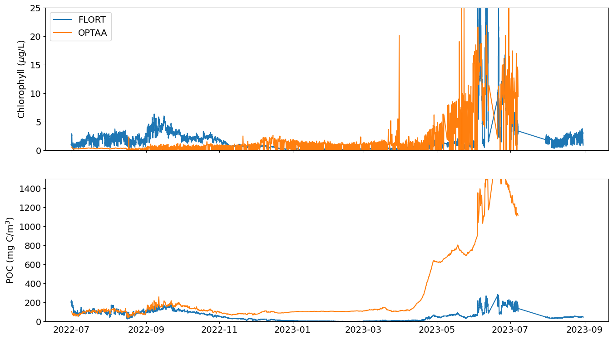
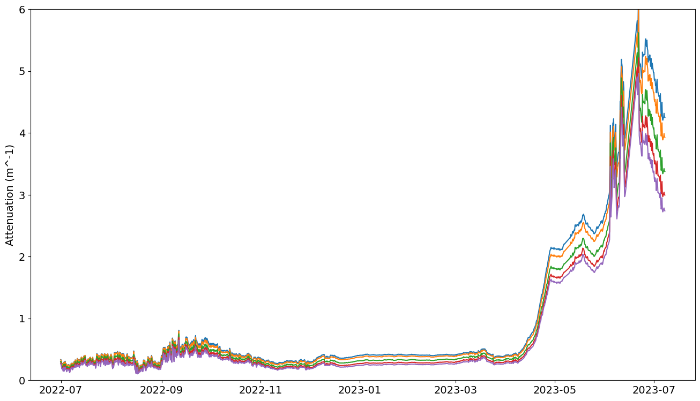
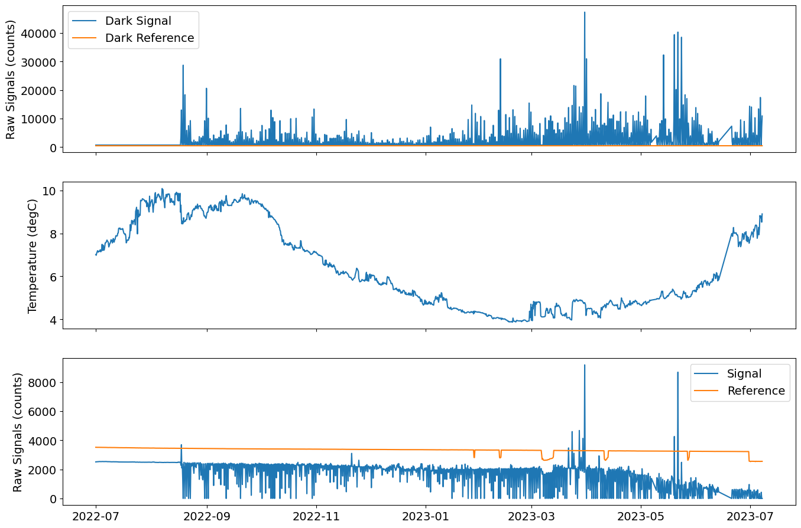

%matplotlib inline
# load the different libraries and modules needed for the analysis
import csv
import io
import numpy as np
import os
import pandas as pd
import re
import xarray as xr
from ooi_data_explorations.common import get_vocabulary, load_kdata
from ooi_data_explorations.uncabled.process_optaa import optaa_datalogger
from matplotlib import pyplot as plt
# Setup needed parameters for the request
site = 'GI01SUMO' # OOI Net site designator
node = 'RID16' # OOI Net node designator
sensor = '01-OPTAAD000' # OOI Net sensor designator
stream = 'optaa_dj_dcl_instrument' # OOI Net stream name
method = 'telemetered' # OOI Net data delivery method
level = 'nsif' # local directory name, level below site
instrmt = 'optaa' # local directory name, instrument below level
# We are after the the data from deployment 9
vocab = get_vocabulary(site, node, sensor)[0]
deploy = 9
# set up the calibration file path and name
cal_path = os.path.join(os.path.expanduser('~'), 'acs_workshop/data/reprocess', site.lower(), level, instrmt)
cal_path = os.path.abspath(cal_path)
if not os.path.exists(cal_path):
os.makedirs(cal_path)
cal_file = ('{}.{}.{}.deploy{:02d}.cal_coeffs.json'.format(site.lower(), level, instrmt, deploy))
cal_file = os.path.join(cal_path, cal_file)
%%time
# load data from the local kdata directory
optaa = load_kdata(site, node, sensor, method, stream, ('deployment%04d*OPTAA*.nc' % deploy))
Downloading 23 data file(s) from the local kdata directory
Downloading 23 data file(s) from the local kdata directory
Loading and Processing Data Files: 100%|██████████| 23/23 [00:09<00:00, 2.42it/s]
Merging the data files into a single dataset
CPU times: user 3.71 s, sys: 6.75 s, total: 10.5 s
Wall time: 15.5 s
# view the dataset as downloaded from OOI (with some minor modifications, e.g. switching dimensions from obs to time)
optaa
<xarray.Dataset> Size: 4GB
Dimensions: (time: 1254364, wavelength: 88)
Coordinates:
* wavelength (wavelength) int32 352B 0 1 2 3 ... 85 86 87
* time (time) datetime64[ns] 10MB 2022-06-30T21:00...
Data variables: (12/21)
external_temp_raw (time) uint16 3MB 41486 41483 ... 40323 40323
c_signal_counts (time, wavelength) uint16 221MB 663 ... 3427
a_signal_counts (time, wavelength) uint16 221MB 678 ... 1614
a_reference_counts (time, wavelength) uint16 221MB 1355 ... 6472
wavelength_a (time, wavelength) float64 883MB 399.8 ... ...
elapsed_run_time (time) uint32 5MB 10322 10566 ... 228342
... ...
c_signal_dark_counts (time) uint16 3MB 718 717 718 ... 718 718 718
pressure_counts (time) uint16 3MB 0 0 0 0 0 0 ... 0 0 0 0 0 0
a_signal_dark_counts (time) uint16 3MB 697 697 698 ... 11576 11522
c_reference_counts (time, wavelength) uint16 221MB 878 ... 8568
a_reference_dark_counts (time) uint16 3MB 465 465 465 ... 468 468 468
sea_water_temperature (time) float64 10MB 6.945 6.945 ... 8.858
Attributes: (12/69)
node: RID16
comment: Data produced by the OOI M2M API and ...
publisher_email:
sourceUrl: http://oceanobservatories.org/
collection_method: telemetered
stream: optaa_dj_dcl_instrument
... ...
geospatial_lon_resolution: 0.1
geospatial_vertical_units: meters
geospatial_vertical_resolution: 0.1
geospatial_vertical_positive: down
lat: 59.936183
lon: -39.470155%%time
# use the optaa_datalogger function for AC-S data from surface moorings
optaa = optaa_datalogger(optaa, cal_file)
optaa
Calculating burst averages ...
... burst averaging complete. Elapsed time: 10.902224 seconds
Converting absorption data ...: 100%|██████████| 1445/1445 [00:00<00:00, 6706.78it/s]
Converting attenuation data ...: 100%|██████████| 1445/1445 [00:00<00:00, 6756.48it/s]
CPU times: user 12.2 s, sys: 775 ms, total: 12.9 s
Wall time: 13.2 s
<xarray.Dataset> Size: 15MB
Dimensions: (time: 1445, wavelength_number: 100)
Coordinates:
* time (time) datetime64[ns] 12kB 2022-06-30T21:00...
* wavelength_number (wavelength_number) int64 800B 0 1 2 ... 98 99
Data variables: (12/33)
external_temp_raw (time) int64 12kB 41482 41501 ... 40551 40325
elapsed_run_time (time) float64 12kB 1.367e+05 ... 1.367e+05
internal_temp_raw (time) int64 12kB 51569 51578 ... 51082 50955
c_reference_dark (time) int64 12kB 481 481 483 ... 481 483 481
sea_water_practical_salinity (time) float64 12kB 34.77 34.77 ... 34.79
deployment (time) int64 12kB 9 9 9 9 9 9 ... 9 9 9 9 9 9
... ...
wavelength_c (time, wavelength_number) float64 1MB 399.6...
c_signal (time, wavelength_number) int64 1MB 649 ......
c_reference (time, wavelength_number) int64 1MB 861 ......
beam_attenuation (time, wavelength_number) float64 1MB nan ....
cpg (time, wavelength_number) float64 1MB 0.345...
cpg_ts (time, wavelength_number) float64 1MB nan ....
Attributes: (12/69)
node: RID16
comment: Data produced by the OOI M2M API and ...
publisher_email:
sourceUrl: http://oceanobservatories.org/
collection_method: telemetered
stream: optaa_dj_dcl_instrument
... ...
geospatial_lon_resolution: 0.1
geospatial_vertical_units: meters
geospatial_vertical_resolution: 0.1
geospatial_vertical_positive: down
lat: 59.936183
lon: -39.470155%%time
from ooi_data_explorations.uncabled.process_flort import flort_datalogger
# Setup needed parameters for the request
sensor = '02-FLORTD000' # OOI Net sensor designator
stream = 'flort_sample' # OOI Net stream name
method = 'telemetered' # OOI Net data delivery method
level = 'nsif' # local directory name, level below site
instrmt = 'flort' # local directory name, instrument below level
# load data from the local kdata directory
flort = load_kdata(site, node, sensor, method, stream, ('*deployment%04d*FLORT*.nc' % deploy))
flort = flort_datalogger(flort, burst=True)
# create an estimate of POC from the particulate backscatter data
flort['estimated_poc'] = 53607 * (flort['bback'] - flort['sea_water_scattering_coefficient']) + 2.5 # derived from Cetinic et al., 2012 and references there in
Downloading 3 data file(s) from the local kdata directory
Downloading 3 data file(s) from the local kdata directory
Loading and Processing Data Files: 100%|██████████| 3/3 [00:36<00:00, 12.23s/it]
Merging the data files into a single dataset
CPU times: user 3min 24s, sys: 3.77 s, total: 3min 28s
Wall time: 3min 52s
%matplotlib inline
# Plot the instrument and co-located CTD temperature records
plt.rcParams.update({'font.size': 14})
fig = plt.figure(figsize=(16,9))
plt.plot(optaa['time'], optaa['sea_water_temperature'], '-k', label='CTD')
plt.plot(optaa['time'], optaa['internal_temp'], label='AC-S Internal')
plt.plot(optaa['time'], optaa['external_temp'], label='AC-S External')
plt.ylabel('Seawater Temperature (degC)')
plt.legend()
<matplotlib.legend.Legend at 0x7ff69ebaae50>
# show the FLORT dataset
flort
<xarray.Dataset> Size: 11MB
Dimensions: (time: 37346, stats: 3)
Coordinates:
* time (time) datetime64[ns] 299kB 20...
* stats (stats) int32 12B 0 1 2
Data variables: (12/31)
estimated_chlorophyll_qc_results (time) float64 299kB 29.0 ... ...
fluorometric_cdom (time) float64 299kB 0.453 ......
fluorometric_cdom_qc_executed (time) float64 299kB 29.0 ... ...
fluorometric_cdom_qartod_results (time) float64 299kB 3.0 ... 1.0
fluorometric_chlorophyll_a_qartod_results (time) float64 299kB 1.0 ... 1.0
beta_700_qc_executed (time) float64 299kB 29.0 ... ...
... ...
beta_700_qc_summary_flag (time) float64 299kB 1.0 ... 3.0
fluorometric_cdom_qc_summary_flag (time) float64 299kB 1.0 ... 1.0
fluorometric_cdom_burst_stats (time, stats) float64 896kB -0...
estimated_chlorophyll_burst_stats (time, stats) float64 896kB 0....
beta_700_burst_stats (time, stats) float64 896kB 0....
estimated_poc (time) float64 299kB 195.7 ......
Attributes: (12/69)
node: RID16
comment: Data produced by the OOI M2M API and ...
publisher_email:
sourceUrl: http://oceanobservatories.org/
collection_method: telemetered
stream: flort_sample
... ...
geospatial_lon_resolution: 0.1
geospatial_vertical_units: meters
geospatial_vertical_resolution: 0.1
geospatial_vertical_positive: down
lat: 59.936183
lon: -39.470155# plot the estimated chlorophyll and POC concentrations
plt.rcParams.update({'font.size': 14})
fig = plt.figure(figsize=(16,9))
ax1 = plt.subplot(211)
plt.plot(flort['time'], flort['estimated_chlorophyll'], label='FLORT')
plt.plot(optaa['time'], optaa['estimated_chlorophyll'], label='OPTAA')
plt.ylabel('Chlorophyll ($\mu$g/L)')
plt.setp(ax1.get_xticklabels(), visible=False) # turn off x-axis ticklabels
plt.ylim([0, 25])
plt.legend(loc='upper left')
ax2 = plt.subplot(212, sharex=ax1)
plt.plot(flort['time'], flort['estimated_poc'])
plt.plot(optaa['time'], optaa['estimated_poc'])
plt.ylabel('POC (mg C/m$^3$)')
plt.ylim([0, 1500])
plt.show()

# plot the 5 select wavelengths from the attenuation spectra
plt.rcParams.update({'font.size': 14})
fig = plt.figure(figsize=(16,9))
indices = [10, 20, 40, 60, 80]
plt.plot(optaa['time'], optaa['cpg_ts'][:, indices])
plt.ylabel('Attenuation (m^-1)')
plt.ylim([0, 6])
plt.show()

# plot the pigment ratios
plt.rcParams.update({'font.size': 14})
fig = plt.figure(figsize=(16,11))
ax1 = plt.subplot(311)
plt.plot(optaa['time'], optaa['a_signal_dark'], label="Dark Signal")
plt.plot(optaa['time'], optaa['a_reference_dark'], label="Dark Reference")
plt.ylabel('Raw Signals (counts)')
plt.setp(ax1.get_xticklabels(), visible=False) # turn off x-axis ticklabels
plt.legend()
ax2 = plt.subplot(312, sharex=ax1)
plt.plot(optaa['time'], optaa['internal_temp'])
plt.ylabel('Temperature (degC)')
plt.setp(ax2.get_xticklabels(), visible=False) # turn off x-axis ticklabels
ax3 = plt.subplot(313, sharex=ax1)
plt.plot(optaa['time'], optaa['a_signal'][:, 10], label='Signal')
plt.plot(optaa['time'], optaa['a_reference'][:, 10], label='Reference')
plt.ylabel('Raw Signals (counts)')
plt.legend()
plt.show()
